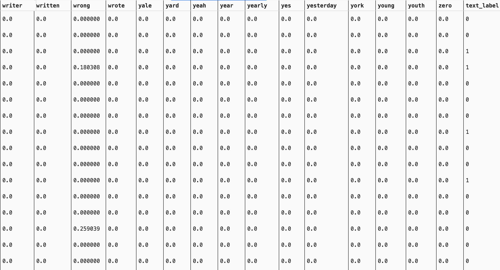

Naive Bayes
Source Code and Data
NaiveBayes(Python Language)
I chose the text of Trump's tweets and divided the statements made before and after Trump was elected president into two categories, and tried to use a Bayesian model to classify the tweets made before and after Trump was elected president
Screenshot of the text data

Gaussian Naive Bayes
Accuracy on training set: 0.869
Accuracy on testing set: 0.823
It seems that the Gaussian Naive Bayes performs good in the text classification. Exactly, Gaussian Naive Bayes is not suitable for fitting the sparse data like vocabulary. In sklearn document, there is a special kind of Naive Bayes called Multinomial. But what surprises me most is if I do some parameter tuning on the Gaussian Naive Bayes model, this model can work as good as the Multinomial Naive Bayes model. The secret is smoothing the max variance of the feature while calculating. Without it, the model have poor accuracy in test set(0.469). I think that it plays as the role of L2 normalization and help model avoid remembering the outliers.

I used the pca dimensionality reduction technique to reduce the X independent variable to 2 dimensions and plotted categorical scatter plots for visualising the decision boundaries of the Bayesian model. The results are very interesting, with the data points appearing as radial lines. And the model argues that the bottommost presenting radial data points appear to be in two categories. It can therefore be argued that Trump's rhetoric began to take on a different character by 2016.
What makes a 3d scatter plot better than a 2d scatter plot is that it gives a better picture of the state of the data distribution. Here, I find that Trump's statements in 2016 have clearer boundaries in 3d space with statements from other times, which is one of the reasons why the model works better.
The confusion matrix reveals that Trump posted fewer tweets after the president-elect, but the model incorrectly discriminates tweets posted after the president-elect as pre-election tweets and tweets posted before the president-elect as post-election tweets, both of which make the model's performance in discriminating Trump's presidential-election tweets not good.But it can also be demonstrated in another way that Trump's rhetorical shift predates the presidential election of 2016
Conclusion
By variance smoothing, I was surprised to find that the distribution of y labels also conforms to a Gaussian distribution. Therefore, before applying each machine learning model, we should carefully understand the mathematical principles of the model and the impact of each hyper parameter on the model. With parameter tuning and data feature uncovering, the Bayesian model achieves no worse results than integrated models such as random forests.
NaiveBayes(R Language)
I chose the 2016 US president election voted county data. And try to figure out that if the Naive Bayes can use qualitative and quantitative data to distinguish between states that support Trump or Hillary Clinton.
Screenshot of the Mixed Data

Naive Bayes
The mixed data contains text, county state vote counts, county vote counts, turnout metrics, etc., contains both categorical and numerical variables, and the range of values varies in size, making it a relatively representative mixed data set. My goal is to use a Bayesian model to discern whether each county ultimately supports Hillary or Trump.
Feature Importance
The column called MeanDecreaseAccuracy contains a measure of the extent to which a variable improves the accuracy of the forest in predicting the classification.From the picture, I can find that state and total votes are the most important feature. Both Democrats and Republicans have relatively fixed states of support, and we have learned through previous decision tree analysis that the counties that support Trump are geographically characterised by being sparsely populated. Thus the characteristic contribution is also more in line with reality.
ROC curve
The ROC curve shows that Bayesian classification performance is just a little better than random guesses and is not at all adaptable to such mixed data.
Bayes Matrix
The confusion matrix gives similar results to the ROC curve analysis, where the model recklessly discriminates most of the counties as Hillary supporters.
Conclusion
By variance smoothing, I was surprised to find that the distribution of y labels also conforms to a Gaussian distribution. Therefore, before applying each machine learning model, we should carefully understand the mathematical principles of the model and the impact of each hyper parameter on the model. With parameter tuning, the Bayesian model achieves no worse results than integrated models such as random forests.
Although in the mixed data, Bayesian performs much worse than the previous decision tree. However, I think it can be compensated by feature mining and aggregation, and some parameter tuning. However, due to time constraints, I did not have time to do further feature mining and model tuning. When faced with data sets consisting of categorical variables as well as numerical variables with multiple value ranges, Bayesian models do not perform as well as more complex models such as decision trees.